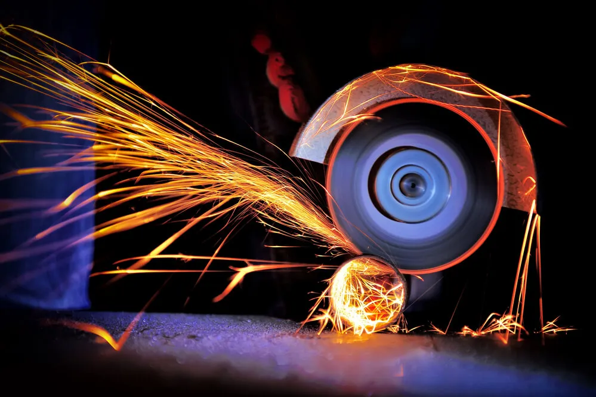
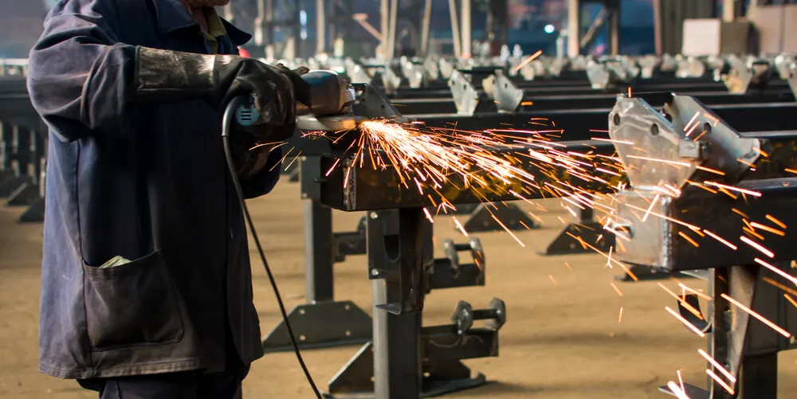
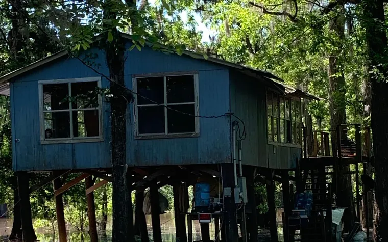
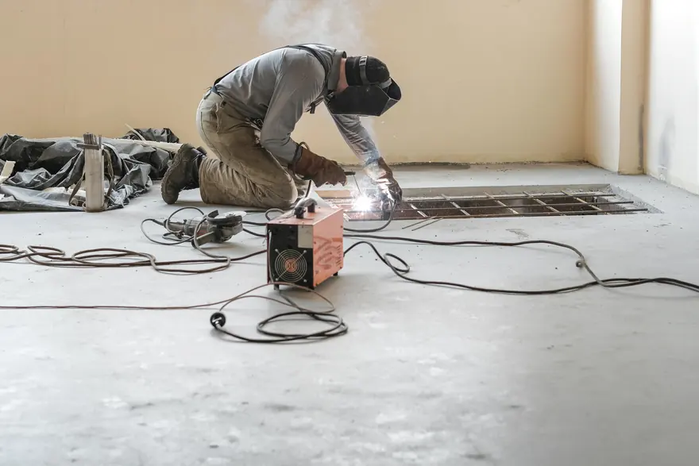

Home · Metal Fabrication
Metal Fabrication in New Orleans, LA
At Big Easy Mobile Welders, we cut, form, weld and assemble metal into finished parts and structures for residential, commercial and industrial settings across New Orleans. Our fabricators support you at every stage, from the first inquiry to the completed project.

We come to the jobWhat Is Included in Our Metal Fabrication Service in New Orleans?
Each metal fabrication job we take on in New Orleans comes with support from the first inquiry to completion, a design worked out with you, cutting and burning to shape, forming and machining, welding and assembly of the finished part, and the work of licensed, insured fabricators who handle all types of metal.
Support at Every Stage
We stay with your project from the initial inquiry to completion. Our fabricators give you the support you need along the way.
A Design Worked Out With You
Our team reviews your design and adjusts it where needed, using CAD software to set the final plan. We look at requirements, the best way to build it and where it can be improved.
Cutting and Burning
Raw metal is cut and burned to the shapes and lengths the design calls for. Precise cuts make every later step go together cleanly.
Forming and Machining
Flat stock is bent, formed and machined into the profile each part needs. This is where plain metal starts to take the shape of the finished product.
Welding and Assembly
Formed parts are welded and assembled into the finished piece. Two or more parts fuse under heat and form a solid joint as they cool.
Licensed, Insured Fabricators
Our craftsmen are trained to fabricate all types of metal in residential, commercial and industrial settings. They bring more than 20 years of experience to the work.

What Metals Do We Use for Metal Fabrication in New Orleans?
The metals we use most for metal fabrication in New Orleans are aluminum, carbon steel, stainless steel and copper. Most work begins with sheet metal, while some parts start as pipe, tube or bar stock, and we choose the metal and its form to suit what the finished part has to do.
Aluminum
Aluminum is lightweight and durable, which makes it a popular choice for many fabrication projects. We work with it in sheet, pipe and tube form.
Carbon Steel
Steel is made of iron and carbon, and carbon steel is the most widely used fabrication material because of its strength and sturdiness. It suits frames, supports and structural parts.
Stainless Steel
Stainless steel is most commonly used for appliances and cabinet fittings. Its chromium content helps it resist corrosion, which suits damp settings.
Copper
Copper is known for its conductivity, its malleability and its resistance to corrosion. It can be bent and shaped readily into detailed parts.
Why Does Metal Fabrication in New Orleans Have to Plan for Humidity and Salt Air?
Metal fabrication in New Orleans has to plan for humidity and salt air because the Gulf Coast climate is hard on metal. Fabricated parts that will sit outdoors or near the water need the right metal and protection from the start, or corrosion begins at seams, cut edges and welds.

We build with humidity, salt air and corrosion in mind, because this climate tests every part we make.
We fabricate and repair on site for homes, businesses and industrial sites across the New Orleans area. Structural steel for a renovation and brackets for a shop in Metairie are both jobs we can bring to your site.
Many homes here sit on raised or pier foundations, and any steel under them stays exposed to damp air. Our guide on structural steel repair on raised and pier-supported homes covers what that work involves.
What Are the Benefits of Professional Metal Fabrication in New Orleans?
Professional metal fabrication in New Orleans gives you a durable end product made for its intended purpose, a solution that fits your exact specifications, and material costs that careful planning and redesign can help lower. You also get access to skilled fabricators and a wide range of quality equipment without buying any of it yourself.

Durable End Products
We use quality materials and processes so the finished product holds up. Each part is made to do the job it is intended for.
Built to Your Specifications
Custom fabrication adapts to your measurements and requirements instead of forcing a stock part to fit. You get a part shaped for your project.
Lower Material Costs
Lean manufacturing methods and cost-reducing redesign can help lower what you spend on metal. Ask us where your design can be simplified.
What Are the Steps in Our Metal Fabrication Process in New Orleans?
Our metal fabrication process in New Orleans starts with your design, which we analyze, adjust, test and refine with you. We then fabricate the parts by cutting, forming and welding them, assemble the finished product and review it with you, with easy payment options and support after the job.
Design
We review your design with you, set the project requirements and finalize the plan in CAD software.
Prototype and Refine
We check that the design is feasible and make adjustments as we consult with you.
Fabricate
The metal is cut, formed, drilled and welded, and the time this takes depends on the design.
Assemble and Review
We assemble the finished product, go over it with you and remain available for follow-up support.
 The rig comes to you
The rig comes to you
What Does Metal Fabrication Cost in New Orleans?
Metal fabrication cost in New Orleans depends mainly on the size of the project and the design. Very long steel members and unique, unusual or custom designs can raise the price, and the metal you choose matters too. Every estimate we give is free, with transparent pricing and no hidden fees.
Size of the Project
A single bracket and a full set of structural members are very different jobs in metal and hours.
Complexity of the Design
Unique, unusual and custom designs take more cutting, forming and fitting, which adds to the price.
Long Steel Members
Projects that need steel longer than 30 feet carry additional costs.
The Metal and Its Form
Aluminum, carbon steel, stainless steel and copper differ in price, and so do sheet, tube and bar stock.
What Should You Know Before Booking Metal Fabrication in New Orleans?
Before booking metal fabrication in New Orleans, gather any drawings, measurements or sample parts, know what the finished piece has to do, and check what your site requires for hot work. With those details ready, we can review the design sooner and give you a more accurate estimate.
Drawings, Measurements or a Sample
Bring a drawing, a set of dimensions or the old part you want replaced. The more detail we have, the faster we can review the design.
What the Part Has to Do
Tell us the load, the setting and whether it will sit indoors or outside. That decides the metal, its thickness and the finish.
Hot Work Rules on Your Site
Cutting and welding on commercial and industrial properties may need a hot work permit and a fire watch. Our guide on hot work permits and fire watch on commercial sites explains what to expect.
What Do Reviews Say About Our Metal Fabrication Crew in New Orleans?
Our customers write about fair prices and quick turnarounds, and about workmanship they rate as top-notch. They come from people who hired the same licensed, insured New Orleans crew that cuts, forms and welds metal parts and structures for residential, commercial and industrial properties across the area.
Big Easy Mobile Welders provide quality welding work at a reasonable price. They have been reliable and quick to respond whenever I've needed them, which has made it easy for me as their customer!
The guys from Big Easy Mobile Welders were great! They came to my house and welded two iron railings with a quick turnaround time, which was just what I needed. The quality of workmanship is top notch which made me a satisfied customer! If you need anything welded then these guys will be able to help out big time.
I can't recommend Big Easy Mobile Welders enough! They helped me out of a jam by welding our gate, and their work is amazing. The fast service combined with great quality made all the difference in getting things done quickly without any hassle for me. Thanks again, guys!
If you need a welder for any type of job, I highly recommend Big Easy Mobile Welders. The team did an amazing job on my home and business! They were professional from start to finish. Thankful that their work could help me get back up and running again sooner than expected.
I had the pleasure of working with Big Easy Mobile Welders this past week. They are not only professional and skilled, but also very affordable! I highly recommend them for any welding job you may need done on your property or vehicle. You won't regret using these guys as they do amazing work at a fair price 10/10 would do again!
What Other Welding Services Pair With Metal Fabrication in New Orleans?
Metal fabrication in New Orleans often pairs with our welding services: custom welding for one-off pieces, iron railing and gate welding, specialized mobile welding, pipe welding and arc welding. The licensed, insured fabricators who build your parts handle each of these too, at your home, business or work site.

Custom Welding
Custom ironwork, estimated before we start so we arrive with the right equipment for the job.
View custom welding →
Iron Railing Welding
Custom indoor and outdoor railings for stairways, decks and balconies, built to fit your property.
View railing welding →
Gate Welding
Gate repairs and custom gates in steel or aluminum, with materials and tools covered in your estimate.
View gate welding →
Specialized Mobile Welding
Repair work at your home or office and custom metal pieces, whatever the size of the project.
View specialized welding →
Pipe Welding
Pipe and pipeline repair on site, with stick and gas-shielded processes matched to the pipe.
View pipe welding →
Arc Welding
Shielded and non-shielded arc welding for commercial and residential customers.
View arc welding →
Where Can You Get a Free Metal Fabrication Estimate in New Orleans?
Request a free metal fabrication estimate in New Orleans with our online estimate form, or call (504) 370-2757 to talk it through. Tell us what you need made, the metal if you know it and the setting, and we will reply with a no-obligation quote.
Loading the estimate form...
If it does not appear, call us at (504) 370-2757.

What Do People Want to Know About Metal Fabrication in New Orleans?
Property owners in New Orleans often ask what metal fabrication and fabrication welding are, what the basic steps involve and how plasma cutting fits in. They also ask what sheet metal, structural steel and stainless steel fabrication mean, and what a fabrication shop actually does.
What is metal fabrication?
Metal fabrication is the process of building machines, parts and structures from raw metal. Flat or stock metal is cut, burned, formed, machined, welded and assembled until it takes the shape of the final product. It covers everything from hand railings and brackets to architectural and structural metal.
What is fabrication welding?
Fabrication welding is the welding done as part of building a fabricated product. After parts are cut and formed, the welder joins them into frames, assemblies or structures. It differs from repair welding, which fixes an existing piece, because the welds are planned into the design from the start.
What is plasma cutting in metal fabrication?
Plasma cutting slices through electrically conductive metal with a jet of ionized gas heated by an electric arc, which melts the metal and blows it out of the cut. Fabricators often use it on steel, stainless steel and aluminum because it is fast and leaves a fairly clean edge that needs little grinding.
What are the basics of metal fabrication?
The basics are design, cutting, forming, joining and finishing. A plan sets the shape and dimensions, the metal is cut to size, then bent or formed into profile. The parts are joined, usually by welding, and the finished piece is cleaned up and protected with a suitable coating.
What is sheet metal fabrication?
Sheet metal fabrication turns flat sheets of steel or aluminum into parts and structures. The sheet is cut, bent, stretched, punched and folded, then assembled into a functional part. It is used for enclosures, panels, brackets, ducting and many other items that start as a flat sheet.
What is structural steel fabrication?
Structural steel fabrication is the cutting, drilling, fitting and welding of steel beams, columns, channels and plates so they can carry loads in a building or other structure. Pieces are usually made to engineered drawings so they bolt or weld together correctly when they reach the site.
What is stainless steel fabrication?
Stainless steel fabrication is cutting, forming and welding stainless steel into finished parts. Stainless resists corrosion, so it is common for appliances, cabinet fittings and equipment that faces moisture. It needs clean tools and careful heat control during welding to keep its corrosion resistance intact.
What is a metal fabrication shop?
A metal fabrication shop is a business that cuts, forms, welds and assembles metal into parts and products for customers. Some work only in a fixed shop, while others can also fabricate and repair on site. The work ranges from one-off brackets to full structural assemblies.


Book Your Free Mobile Welding Estimate
Tell us what needs welding, and we will bring the rig to your door anywhere in the New Orleans area.